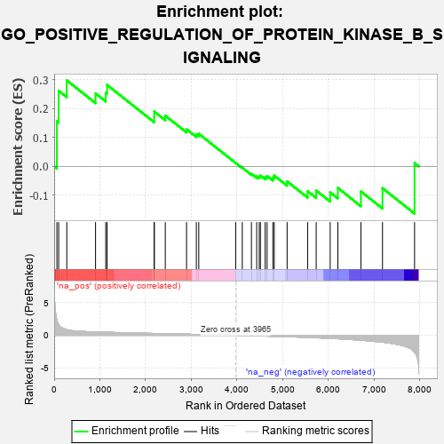
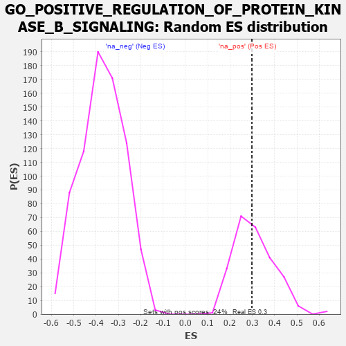

| | | Dataset | 7d |
| Phenotype | NoPhenotypeAvailable |
| Upregulated in class | na_pos |
| GeneSet | GO_POSITIVE_REGULATION_OF_PROTEIN_KINASE_B_SIGNALING |
| Enrichment Score (ES) | 0.2982526 |
| Normalized Enrichment Score (NES) | 0.9601765 |
| Nominal p-value | 0.5 |
| FDR q-value | 0.773257 |
| FWER p-Value | 1.0 |
Table: GSEA Results Summary

Fig 1: Enrichment plot: GO_POSITIVE_REGULATION_OF_PROTEIN_KINASE_B_SIGNALING
Profile of the Running ES Score & Positions of GeneSet Members on the Rank Ordered List
| PROBE | GENE SYMBOL | GENE_TITLE | RANK IN GENE LIST | RANK METRIC SCORE | RUNNING ES | CORE ENRICHMENT | | 1 | RAC2 | | | 60 | 2.442 | 0.1559 | Yes |
| 2 | IRS1 | | | 98 | 1.659 | 0.2623 | Yes |
| 3 | HGF | | | 276 | 0.870 | 0.2983 | Yes |
| 4 | STOX1 | | | 905 | 0.506 | 0.2530 | No |
| 5 | SRC | | | 1128 | 0.459 | 0.2558 | No |
| 6 | GAB1 | | | 1158 | 0.453 | 0.2824 | No |
| 7 | MEIS3 | | | 2188 | 0.278 | 0.1715 | No |
| 8 | C1QBP | | | 2189 | 0.278 | 0.1901 | No |
| 9 | MET | | | 2430 | 0.240 | 0.1759 | No |
| 10 | FGFR2 | | | 2895 | 0.167 | 0.1287 | No |
| 11 | GPX1 | | | 3109 | 0.135 | 0.1109 | No |
| 12 | GCNT2 | | | 3162 | 0.128 | 0.1129 | No |
| 13 | IGF1R | | | 3970 | -0.002 | 0.0114 | No |
| 14 | MTOR | | | 4114 | -0.025 | -0.0049 | No |
| 15 | BAG4 | | | 4314 | -0.061 | -0.0259 | No |
| 16 | MYDGF | | | 4429 | -0.081 | -0.0348 | No |
| 17 | HIP1 | | | 4485 | -0.092 | -0.0356 | No |
| 18 | ILK | | | 4510 | -0.096 | -0.0321 | No |
| 19 | GATA3 | | | 4614 | -0.120 | -0.0370 | No |
| 20 | FGFR3 | | | 4656 | -0.129 | -0.0336 | No |
| 21 | RTN4 | | | 4783 | -0.154 | -0.0391 | No |
| 22 | P2RX4 | | | 4813 | -0.161 | -0.0320 | No |
| 23 | ITSN1 | | | 5094 | -0.222 | -0.0524 | No |
| 24 | FGFR1 | | | 5543 | -0.332 | -0.0866 | No |
| 25 | CALCR | | | 5730 | -0.386 | -0.0842 | No |
| 26 | RAC1 | | | 6036 | -0.484 | -0.0902 | No |
| 27 | INSR | | | 6204 | -0.538 | -0.0752 | No |
| 28 | EGFR | | | 6708 | -0.765 | -0.0873 | No |
| 29 | PTPRJ | | | 7180 | -1.054 | -0.0760 | No |
| 30 | FYN | | | 7881 | -2.622 | 0.0113 | No |
Table: GSEA details [plain text format]

Fig 2: GO_POSITIVE_REGULATION_OF_PROTEIN_KINASE_B_SIGNALING: Random ES distribution
Gene set null distribution of ES for GO_POSITIVE_REGULATION_OF_PROTEIN_KINASE_B_SIGNALING